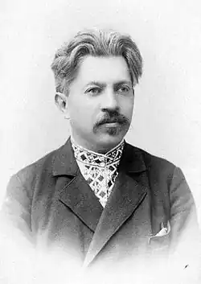
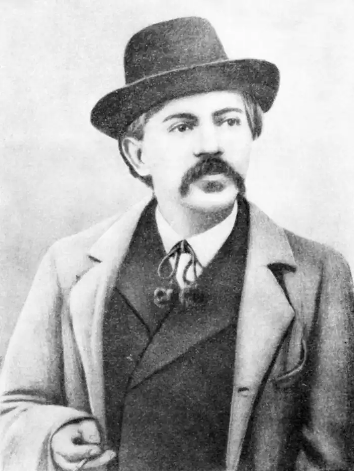

ВОЛОДИМИР САМІЙЛЕНКО
(1864 — 1925)
Поет-лірик, сатирик, драматург, перекладач — В. Самійленко в усіх жанрах творчості виявив себе як митець з тонким відчуттям слова, своїми темами, своєю неповторною манерою письма, зі своїм оригінальним підходом до традиційних тем. Народився Володимир Іванович Самійленко 3 лютого 1864р. в с. Великі Сорочинці на Полтавщині. Батько його був поміщик Іван Лисевич, а мати — колишня кріпачка Олександра Самійленко. Початкову освіту майбутній письменник одержав у дяка, потім у Миргородській початковій школі. В 1875р. В. Самійленко вступив до Полтавської гімназії, яку закінчив у 1884р. У ці роки обдарований, чутливий до художнього слова юнак багато читає, робить спроби перекладати і писати. Потім з 1885р. вчиться на історико-філологічному факультеті Київського університету. У студентські роки серйозно займається літературною справою. У цей час обставини суспільно-політичного життя були нелегкі. Українське слово було заборонене, реакційні настрої запанували в університеті. Страх перед репресіями уряду (першим заходом щодо студентів було виключення з університету без права продовжувати освіту — з "вовчим квитком") обрубав крила багатьом молодим людям. Після закінчення навчання (1890) В. Самійленко працював у Києві, Чернігові, Катеринославі, терплячи постійні матеріальні нестатки. Врешті склав іспит на нотаря і відкрив нотаріальну контору в м. Добрянці на Чернігівщині, де й працював до 1917p. Після революції виїхав за кордон, до Галичини. В еміграції В. Самійленко прагне повернутися на Україну, і дістає на це дозвіл в 1924p. Повернувшись до Києва, працював редактором. Та здоров'я поета було підірване роками поневірянь, матеріальною скрутою. 12 серпня 1925p. його не стало. Похований В. Самійленко в Боярці під Києвом. Поетична спадщина В. Самійленка включає ліричні і сатиричні вірші, переклади творів з російської та зарубіжної класики. Високі почуття любові до батьківщини — розкішного, багатого краю, що перебуває в неволі й злиднях, звучать у віршах циклу "Україні", "Веселка". В ряді віршів В. Самійленко торкається традиційної теми ролі митця, мистецтва в суспільному житті ("Пісня", "Елегії", "Орел", "Не вмре поезія"), закликає поета не замикатися в особистих стражданнях, а служити людині і людству. Розкриваючи своє кредо поета, В. Самійленко звертається до прикладу великого Кобзаря, це поезії "На роковини смерті Шевченка", "26 лютого", цикл "Вінок Тарасові Шевченку, 26 лютого" та ін. Роль Т. Шевченка у розвитку української мови поет натхненно розкрив у прекрасній поезії "Українська мова (Пам'яті Т. Г. Шевченка)", що стала широко відомим хрестоматійним твором. Яскраву сторінку поетичної творчості В. Самійленка становить його пейзажна та інтимна лірика (цикл "Весна", "Сонети", "Її в дорогу виряджали" та ін.). "Вечірня пісня" поета, покладена на музику К. Стеценком, стала улюбленою народною піснею. Значне місце у творчості митця посідає його філософська лірика, де звучать роздуми про сенс людського буття, про вічність, плин матерії у часі і просторі, про єдність матеріального і духовного начал. В. Самійленко був блискучим майстром сатири й гумору. Кращі його сатиричні твори "Ельдорадо" (1886), "Як то весело жить на Вкраїні" (1886), "На печі" (1898), "Мудрий кравець" (1905), "Невдячний кінь" (1906). Поезії "Дума-цяця", "Міністерська пісня", "Новий лад" стали яскравими зразками нещадної політичної сатири. Афористичність мови, стислість і точність вислову, куплетна форма окремих поезій надають сатиричним творам виняткової виразності й привабливості. З успіхом виступав В. Самійленко і в жанрі драми, написавши кілька комедій, драматизованих гуморесок: "Драма без горілки" (1895), "Дядькова хвороба" (1896), "У Гайхан-бея" (1897), а також визначну драматичну поему "Чураївна" (1894). Чимало зробив В. Самійленко і як перекладач на українську мову російської і зарубіжної класики — творів О. Пушкіна і В. Жуковського, І. Нікітіна і М. Гоголя, Гомера, П. Бомарше, Ж.-Б. Мольєра, Дж. Байрона, П. Беранже та ін.